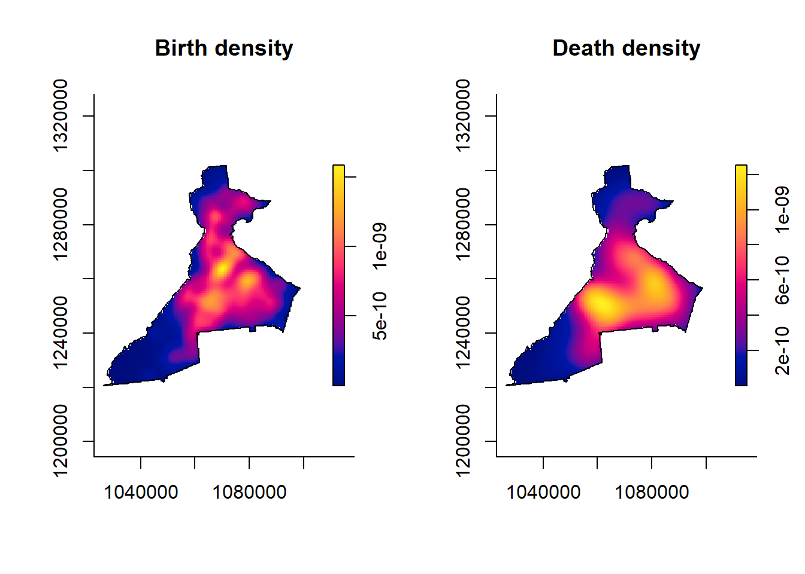
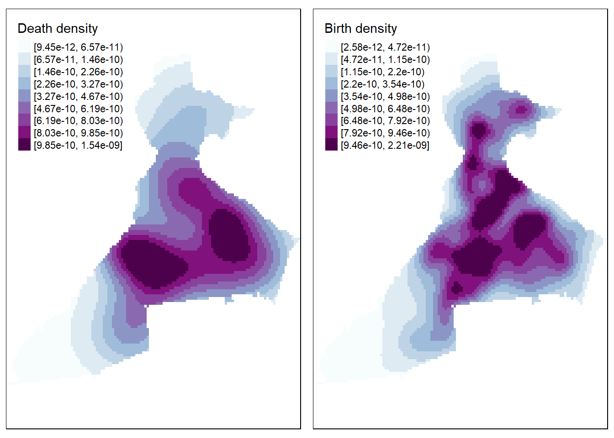
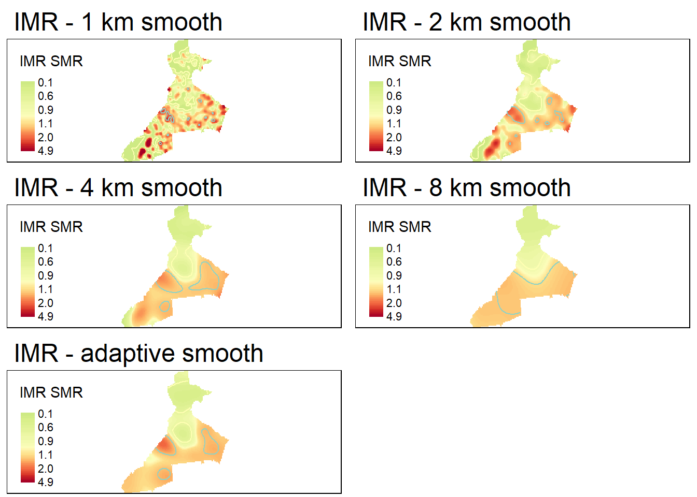
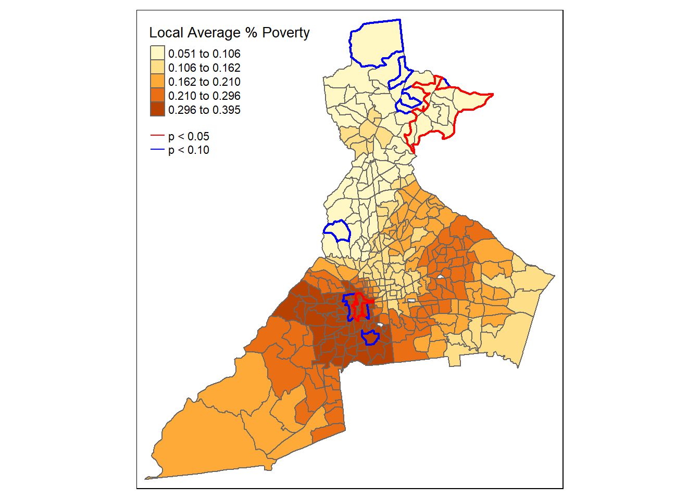

Week 6 Disease Mapping III
6.1 Getting Ready, w6
6.1.1 Learning objectives, w6
| After this module you should be able to… |
|---|
| Discuss the meaning and interpretation of basic functions of spatial point processes including intensity, stationarity, heterogeneity |
| Produce spatially smoothed estimates of epidemiologic parameters using kernel density estimators for point and polygon data |
6.1.2 Additional Resources, w6
- Adrian Baddeley tutorial on analysis spatial point processes
- Hazelton. Kernel Smoothing Methods. Chapter 10, Handbook of Spatial Epidemiology. Posted on Canvas
6.1.3 Important Vocabulary, w6
| Term | Definition |
|---|---|
| Bandwidth | A measure of the width or spatial extent of a two-dimensional kernel density estimator. The bandwidth is the key to controlling how much smoothing occurs, with larger bandwidths producing more smooth surfaces, and smaller bandwidths producing less smooth surfaces |
| Bandwidth, adaptive | An adaptive bandwith means the width or search radius of the spatial kernel density estimator varies or adapts through space, usually to maintain a constant number of points within the window. The result is that in areas with few points there is more smoothing, whereas in areas with many points there is more granularity |
| Bandwidth, fixed | A fixed bandwidth means the width or search radius of the spatial kernel density estimator is constant (fixed) for the full study region |
| Geographic-weighting | A method for calculating summary weighted statistics by relying on a kernel density estimator to describe the weights in local summaries. |
| Homogenous Poisson Point Process | A spatial statistical assumption that the count of events in an arbitrarily small area is distributed Poisson with mean lambda for all regions |
| Inhomogenous Poisson Point Process | A spatial statistical assumption that the count of events in an arbitrarily small area is distributed Poisson with mean lambda that varies through space as a function of the underlying population at risk. This is true for most spatial epidemiology. |
| Kernel density estimator | A non-parametric way to estimate the probability distribution function of a random variable. In spatial (e.g. 2-d) kernel density estimation, it is a way to describe the spatially continuous variation in the intensity of events (points). |
| Spatial density | A standardized metric of spatial intensity. Related to a probability density function, it is a proportionate indicator of how much of the total events occur in a specific region. In kernel density estimation, the density surface integrates (or sums) to 1 across a study region. |
| Spatial intensity | A measure of the ratio of events at specific points to a unit of area. Spatial intensity describes the spatially continuous surface of event occurrence. In kernel density estimation, a spatial intensity surface integrates (or sums) to the sample size across a study region. |
6.2 Spatial Thinking in Epidemiology, w6
6.2.1 Revisiting spatial point processes
People exist in places, but they are not uniformly nor randomly distributed. More live in cities; fewer live in rural area. But conditional on where people actually live or work or play, under a null expectation we could treat the occurrence of health events (e.g. disease, death, behaviors) as random variables, and leverage the tools of statistics to characterize when occurrence is what we would expect versus when it is something unusual.
In spatial analysis, we treat health events as random events among individuals located in space. Thus, conditional on where people are, we might assume that the occurrence of events is generated according to the assumed probability distribution. The utility of the Poisson Point Process becomes apparent when we see that we could divide a region into very small sub-regions and count the number of events within each, assuming that count follows a Poisson distribution.

FIGURE 6.1: Poisson point process
In the above figure, we quantify the spatial intensity of events by calculating \(\lambda = \frac{n}{area}\). Thus, all of our statistical analysis to date is premised on this idea that the spatial location of points can be interpreted through the lens of a Poisson probability distribution. But what if we could calculate the spatial intensity more continuously, without the constraint of a specific parametric distribution, and without using the possibly arbitrary boundaries and zoning schemes of areal geographic units such as census tracts, zip codes, or counties?
Spatial point process analysis focuses on characterizing patterns derived directly from the location of the points themselves, without arbitrary aggregation. The study of point process analysis is broad, but we will focus on one particularly flexible strategy this week: kernel density estimation (KDE). Kernel density estimation has several features making it useful for spatial epidemiology including:
- It is non-parametric, meaning it does not rely on a specific probability distribution (e.g. Poisson, negative binomial)
- It provides an alternative means for characterizing local neighbors. The strategy of the KDE estimators is most similar to inverse distance weighting
- It can be used as a primary tool, or can be an intermediate step for creating spatial weights, as we will see in geographically weighted regression
- While it is really designed for analyzing points, we can use it on areal/polygon data as well.
6.2.2 What is a kernel density estimator?
A kernel is a function (e.g. a shape) centered over each point of data. For example, a Gaussian kernel means there is a Gaussian bell-shaped curve centered over each point; the width of the curve is defined by a parameter, \(h\), which stands for the bandwidth.

FIGURE 6.2: Kernel density estimator
To estimate the spatial intensity of points, \(\hat{\lambda}\), we can sum up the area under all of the kernels to estimate an overall kernel density at each location. This kernel density estimate essentially reports a spatially continuous summary of the local intensity of events.
The result is that we can summarize a study region with spatially-referenced point data using a spatially continuous intensity surface. The analyst decides on how smooth or bumpy the surface should be by increasing or decreasing the value of the bandwidth parameter, \(h\). As we will see below, the decision about bandwidth could be made subjectively (e.g. to produce a visually appealing surface), or by minimizing error or through cross-validation.

FIGURE 6.3: Kernel density smoothing
6.2.3 Limitations in kernel density estimation
There are several features of real data that can limit the accurate estimation of a true underlying spatial intensity surface. Here are a few:
- Study region and edge effects: In almost any situation, the data available in a given dataset represents only a subset of the universe of points and events of interest. We can only carry out KDE on available data, and if there are boundaries to where data is collected (e.g. only within a given state boundary), then the intensity of points near boundaries may be mis-estimated due to missing data. Several of the statistical smoothers below have options to incorporate adjustments for these edge effects.
- Determining bandwidth: The choice of the kernel bandwidth is perhaps the most influential decision driving how the final results appear. While occasionally there may be theoretical grounds for a priori specification of bandwidth, often the decision is one of subjective analyst choice (typically not ideal) or of statistical optimization. In the sections below there is discussion of fixed versus adaptive bandwidths, as well as some algorithms for selecting values or at least upper or lower bounds.
6.2.4 Uses for kernel density estimation (KDE) in spatial epidemiology
Because kernel density estimation is the only method we will learn this semester for working with point data, it should be clear that this is one major application. However, more generally, KDE has broad applications. Here are some examples of when you might think about using kernel density estimates:
- For producing spatially continuous (typically raster) surfaces representing disease risk. This is the application most consistent with disease mapping, where the purpose is to describe spatial heterogeneity in disease intensity or risk.
- For summarizing point-referenced resources (e.g. retail food outlets; health care clinics; toxic emitters; etc) as an exposure surface. This strategy is an alternative to calculating custom distances between each event point and every other resource or exposure. Instead, the kernel density surface summarizes the average exposure to all resources at any given point in space.
- For smoothing and summarizing data measured at an areal or polygon unit. While KDE is optimized for point data, it is possible to extend it to smoothing any data (exposure, covariate, or health outcome) measured or reported at an ecologic areal unit.
- Building on the extension of KDE to polygons, we can summarize social or economic exposure surfaces. This is a useful way to extend socio-economic-cultural measures that might be available at census geography to represent them as not only contained within specific boundaries, but as being explicitly spatially situated.
In the next section, we introduce two different uses of kernel density estimation:
- First is the intensity estimation of spatial point processes consistent with the description above.
- Second, we illustrate the use of kernel density estimators to create weights for geographically-weighted summary statistics, including the spatially varying mean risk or rate. This strategy can be applied to either points or to polygons.
6.2.5 Guide to the rest of this section…
There is a lot of content contained in this module. It is worth highlighting some broad distinctions to help you navigate.
The first section focuses on tools using the sparr and spatstat packages to create kernel density estimates from point data. This includes:
- Creating
pppobjects for planar point processes - Creating
owinobjects to define study regions - Discussion of several different strategies for selecting a kernel bandwidth which dictates smoothing
- Creation of kernel density surfaces of single point processes
- Creation of kernel density relative risk surfaces contrasting the ratio of numerator to denominator intensity
- Visualizing the output in several ways.
The second section introduces a seemingly quite distinct strategy for incorporating kernel density estimators into spatial epidemiology. It introduces tools for calculating geographically weighted summary statistics to characterize spatial heterogeneity. These tools use kernel density estimators to geographically weight observations, and can be applied to points or polygons. This section includes:
6.3 Spatial Analysis in Epidemiology: Kernel estimation of point processes
This section has three specific objectives:
- Introduce a new spatial data class in
R,ppp, which is necessary for executing the kernel estimation functions - Introduce kernel density estimation of spatial point processes, including selection of fixed bandwidths, and use of adaptive bandwidths
- Introduce spatial relative risk surfaces, including estimation of tolerance contours
6.3.1 Preparing packages and data
There are several new packages that will be required for this work:
library(sparr) # A package for estimating spatial intensity and relative risk
library(spatstat) # A package with tools that underly the sparr package
library(maptools) # This has a helper function for working with ppp class data
library(raster) # The outputs of these KDE functions will be raster. This package gives us tools for working with rastersIn addition to those new packages, we will also need the sp package. Recall that we have only worked with sf class data up until now, although we learned that sp was the older format for spatial data in R. Some packages and functions (including sparr and spatstat) have not incorporated compatibility with sf data, so we will need to convert some particular objects from sf to sp before moving forward.
The data used in this example, and in the lab, concerns the exact \(x,y\) residential location of all births in Dekalb and Fulton county, including indication of infants who subsequently died within the first year of life.
NOTE: These data are simulated based on approximate patterns. This is not a representation of actual point data.
The spatial point location for births and infant deaths are in two separate files. In addition a polygon file providing the outline for Dekalb and Fulton counties is provided to describe the study window.
# This is points for births in Dekalb/Fulton county
b_point <- st_read('birth_points.gpkg')
# This is points for deaths in Dekalb/Fulton county
d_point <- st_read('death_points.gpkg')
# This is an outline of Dekalb/Fulton county to be used as a study 'window'
county <- st_read('DekalbFultonWindow.gpkg') %>%
as('Spatial')In the code above, note the us of the function as('Spatial') for the object county. This is a conversion step, translating the sf object to an object of class sp. It is only necessary in this particular case for the polygon file representing the study window because the functions the create that window expect data of class sp. In contrast we can extract the coordinates from an sf point object, without a need to convert to sp first.
6.3.2 Introducing a new spatial data class: ppp
Much of the statistical methods for spatial point process actually developed out of ecology, and the methods are only merging with the other spatial analysis and spatial epidemiology fields in recent years. One consequence of this history, is that the early developers of these methods in R defined their own spatial data class called ppp for point pattern data in a two-dimensional plane.
To create a ppp data object we need, at a minimum, two things: a matrix of \(x,y\) coordinates for event points, and a definition for the spatial window or study region. This window is necessary because nearly any data set is a sub-sample of the universe of possible points, and analysis of point processes requires appreciation for the bounds of sampling. We define the window formally in R as an object of class owin, and it can be a rectangular bounding box (e.g. the outline of the available data), or a customized polygon. We will use the outline of Dekalb & Fulton counties as the customized spatial window for the observation of births and infant deaths. Note that the function below to create the owin object only works on sp class SpatialPolygons. That is why we converted the polygon file to class sp when we imported (above).
You can see from the summary and the plot what this owin object looks like.
## Window: polygonal boundary
## single connected closed polygon with 698 vertices
## enclosing rectangle: [1026366.3, 1098719.2] x [1220671, 1302019.3] units
## (72350 x 81350 units)
## Window area = 2086320000 square units
## Fraction of frame area: 0.354
6.3.3 Creating the ppp objects
Now we will use the function ppp() to create objects of class ppp for each of the spatial point files, b_point (representing locations of all births), and d_point (representing locations of all deaths). Doing so requires definition of the study window defined above as the object name countr_owin of class owin. Again, the study window delineates what is in versus out of the study area and demarcates edges of the study region. You can look at the help documentation for the function ppp() to see the arguments. Note that because the function requires specification of the \(x,y\) locations as two separate vectors, we extract the coordinate values from our sf object using st_coordinates().
# Create the birth ppp object
b_ppp <- ppp(x = st_coordinates(b_point)[, 1],
y = st_coordinates(b_point)[, 2],
window = county_owin)
# Create the death ppp object
d_ppp <- ppp(x = st_coordinates(d_point)[, 1],
y = st_coordinates(d_point)[, 2],
window = county_owin)As you might expect, there are built-in methods (from the spatstat package) to summarize and plot ppp objects.
## Planar point pattern: 701 points
## Average intensity 3.359978e-07 points per square unit
##
## Coordinates are given to 2 decimal places
## i.e. rounded to the nearest multiple of 0.01 units
##
## Window: polygonal boundary
## single connected closed polygon with 698 vertices
## enclosing rectangle: [1026366.3, 1098719.2] x [1220671, 1302019.3] units
## (72350 x 81350 units)
## Window area = 2086320000 square units
## Fraction of frame area: 0.354
The summary includes information about the overall spatial intensity (e.g. events per unit area), as well as the number of points, and the observational window. The plot for d_ppp should look just like a plot of d_point as they both contain the same information. Of note, if you repeat the above code for all of the birth events, b_point, the plot will be less readable because there are over 94,000 births as compared with only 705 deaths!
6.3.4 Bandwidth selection
As discussed above, and in lecture, the kernel density estimation requires the analyst to specify a kernel function (e.g. a Gaussian kernel, or a quartic bi-weight kernel), and a kernel bandwidth. Of the two, the bandwidth is substantially more impactful on results than choice of kernel function.
As a reminder, the bandwidth (sometimes indicated by variable \(h\)) describes the width or radius of the kernel function, and as a result dictates how smooth the resulting intensity surface will be. A small bandwidth will produce a bumpier or rougher surface, whereas a larger bandwidth will result in more smoothing. Relating this to our work in previous weeks, the bandwidth is also a representation of local. In other words it defines which sets of points will be considered close and which are not.
There are two general kinds of bandwidth settings:
- Fixed bandwidths: A single value if \(h\) designates that the width of the kernel (and thus the resulting smoothness of the estimated intensity surface) is the same for the entire study region. Fixed bandwidths are commonly used, and sensible for a study region with relatively homogenous population at risk. However choosing a single value can be challenging in practice when the density of points varies substantially across the study region, as could be the case when your study region includes a range from very urban to very rural.
- Adaptive bandwidths: As the name implies, this approach changes or adapts the size of the kernel density bandwidth according to the density of points (data) in differing sub-areas of the overall study region. The result is relatively more smoothing (larger bandwidth) in areas with sparse point data, and relatively less smoothing (smaller bandwidth) in areas with more point density.
While not exactly the same, the specification of bandwidth is conceptually similar to the varying approaches to defining spatial neighbors of polygons. The fixed bandwidth is similar to a fixed-distance buffer or inverse-distance definition, whereas the adaptive bandwidth is similar in some ways to a k-nearest neighbors in that the distance adjusts according to density of units.
6.3.4.1 Fixed bandwidth methods
If you prefer a fixed bandwidth, the first challenge is choosing what it should be. One option for selecting a fixed bandwidth is to incorporate theory or prior knowledge about the process of interest. For instance, if you are trying to understand whether the prevalence of diabetes is related to local food environment in an urban area, you might want a bandwidth which helps illuminate differences in diabetes intensity at a scale consistent with the food environment. For instance a bandwidth of 1-mile might be more reasonable in urban areas than one of 50-miles, as the latter would likely smooth away all of the local variation of interest.
However, it is not uncommon that theory or prior knowledge are insufficient to make a clear choice, or that data sparsity mandates an alternate approach driven by concern for stable estimates. The package sparr has several functions designed to use primarily statistical optimization for estimating an ‘optimum’ bandwidth. We will introduce two commonly used statistical bandwidth selection optimizers:
- Cross-validation: this approach divides the data into subsets, using one subset to choose a bandwidth, and comparing the performance on other subsets. The goal is to find a value that works ‘best’ (e.g. optimize a statistical parameter across multiple iterations). The approach is computationally intensive for large datasets, and in some instances will result in a bandwidth value that is too small. As discussed in note below, cross-validation can result in too small bandwidth estimation.
- Oversmoothing: this is an alternate approach that aims to identify the maximum amount of smoothing necessary for minimizing statistical error. By definition it is a maximum value rather than an ideal or optimal value, but can be useful in setting bounds.
sparr package actually three cross-validation approaches to estimation: LCSV.density (least squares cross validated); LIK.density (likelihood cross-validated); and SLIK.adapt (described as an experimental likelihood cross-validation for adaptive). Each is ‘optimizing’ a different thing…the LSCV.density minimizes an unbiased estimate of the mean integrated squared error (MISE) whereas LIK.density maximizes cross-validated leave one out average of the log-likelihood of the density estimate.
If you look at the help documentation for these you will see (near the bottom) a prominent warning message. It reports that “CV for bandwidth selection is notoriously unstable in practice and has a tendency to produced rather small bandwidths…”
6.3.4.2 Cross-validation with LIK.density()
LIK.density() uses likelihood estimation of cross-validation optimal bandwidth. For the death dataset, d_ppp, it runs in just a few seconds. However it took > 5 minutes to produce a value on the much larger births dataset, b_ppp. This code lets you try it to see what it produces:
## Searching for optimal h in [27.463186212964, 12058.8149770359]...Done.## [1] 1613.661If you examine the object returned (h_LIK_d), you’ll see it is just a single number. This is the value of \(h\), or the optimized bandwidth. It is, in other words, the radius of the 2-dimensional kernel density function in the units of the data, which is meters in this case (e.g. the original data were Albers Equal Area projected). So this means that the optimum kernel will have a radius of just over 1.5 kilometers.
6.3.4.3 Oversmoothing algorithm with function OS()
This approach is much less computationally intense, and thus feasible for both of our spatial point processes. As we will see below, we can use the value returned from OS() as a pilot value for adaptive bandwidth estimation. In other words it provides a kind of reference or starting point for the adaptation process.
## [1] 4257.798## [1] 1897.371Note that the birth data have a smaller optimal bandwidth (h_os_b) because there are more points. More points means more information is available for more granular smoothing, whereas the relatively more sparse death data have a larger over smoothing bandwidth (h_os_d).
6.3.4.4 Selecting a common bandwidth for both numerator and denominator
One challenge in bandwidth selection is that we typically have two related spatial point processes (e.g. the numerator, death events; and the denominator, birth events). Therefore we don’t want only a single KDE, but instead we will need to consider a numerator representing the spatial intensity of deaths, and a denominator representing the spatial intensity of all live births at risk. This raises the question of whether there should be a common bandwidth for both, or whether each should be optimized separately.
While there may be only minor differences in the absolute intensity under different bandwidths in a single point process, taking the ratio of two intensity surfaces can exaggerate small differences to be quite large. There are functions for estimating a single, joint, optimum for the bandwidth. The function LSCV.risk() does just what the LIK.density() above did, but with two spatial point processes. The code example is below, but like the previous example, the cross-validation approach to the birth data set takes an excessive amount of time (at least for this exercise).
6.3.4.5 Adaptive bandwidth methods
Adaptive methods are specified at the time of kernel density estimation. While the bandwidth is not constant, but instead adaptive, we usually still need to specify a pilot bandwidth, which is a reference point from which adaptation occurs. As mentioned above, the oversmoothing approach from OS() can be used as a pilot value.
6.3.5 Estimating Kernel Density surfaces
We now turn to the actual estimation of kernel density approximations of the underlying spatial intensity of disease. The approach in this lab is to first illustrate how to estimate separate densities for each point process (e.g. of deaths and of births), and then to demonstrate two strategies for creating spatial relative risk surfaces, which is generally the target output for spatial epidemiologists.
Of note, this discussion will demonstrate use of both fixed and adaptive bandwidths. In general adaptive bandwidths may be the most practical approach in the absence of theoretical or empirical preference otherwise. However there are instances where fixed bandwidths (either theoretically informed, or as derived from CV or oversmoothing algorithms) are desired, and thus seeing both in action is useful.
6.3.5.1 bivariate.density() for KDE of single point process
There are actually several R packages that accomplish kernel density estimation, but one that is particularly useful for spatial epidemiology (where the kernel density estimator must be 2-dimensional and not just 1-dimensional) is the sparr package, which stands for Spatial and Spatiotemporal Relative Risk.
The sparr function bivariate.density() is a flexible and useful tool for carrying out KDE with either fixed or adaptive bandwidths. There are many arguments for bivariate.density() (see help documentation), but there are several worth specifically highlighting here.
| Function | Description |
|---|---|
pp |
This first argument expects a single point process object of class ppp. We will use either d_ppp or b_ppp |
h0 |
This argument specifies the global fixed bandwidth, if desired. This could be a theoretically-informed value, or derived from an optimization algorithm (e.g. see above) |
hp |
If conducting adaptive bandwidth estimation, a single pilot bandwidth is still required, and this is where to specify it. |
adapt |
This logical argument is FALSE by default, but set to TRUE if you want adaptive bandwidth estimation |
edge |
Because a given dataset is invariably a subset of the real world, there are likely edges where there is an artificially abrupt cessation of information. The result is a potentially biased intensity estimation at the study region edges. However there are correction factors. We will choose the edge = 'diggle' specification here |
intensity |
Up until now we have used the words intensity and density as if they are synonymous for point process parameter, but that is not the case. Intensity is the average number of points per unit area. The density is proportionate to the intensity, but scaled so that all values in the study region sum to 1. In other words a density surface is a proper probability density function. By default, intensity = FALSE which means that by default bivariate.density() produces a density surface. If you want intensity, set intensity = TRUE. |
6.3.5.2 Fixed bandwidth KDE with bivariate.density()
First, let’s try a basic version that uses the oversmooth estimate for each point process.
death_kde <- bivariate.density(pp = d_ppp, h0 = h_os_d, edge = 'diggle')
birth_kde <- bivariate.density(pp = b_ppp, h0 = h_os_b, edge = 'diggle')You can explore the objects produced by the function call. For instance, they are list objects, with named sub-elements:
## Bivariate Kernel Density/Intensity Estimate
##
## Bandwidth
## Fixed smoothing with h0 = 1897.371 units (to 4 d.p.)
##
## No. of observations
## 94373
##
## Spatial bound
## Type: polygonal
## 2D enclosure: [1026366, 1098719] x [1220671, 1302019]
##
## Evaluation
## 128 x 128 rectangular grid
## 5808 grid cells out of 16384 fall inside study region
## Density/intensity range [6.313906e-14, 1.585466e-09]## [1] "z" "h0" "hp" "h" "him" "q"
## [7] "gamma" "geometric" "pp"There is also some plotting functionality built into the sparr package that allows us to quickly visualize the resulting density plot.
par(mfrow = c(1, 2))
plot(birth_kde, main = 'Birth density')
plot(death_kde, main = 'Death density')
6.3.5.3 Adaptive bandwidth KDE with bivariate.density()
As discussed above, an alternative to a single fixed bandwidth, is implementation of an algorithm that changes (adapts) the bandwidth across the study region in response to the density or sparseness of the data. This approach still requires specification of a global bandwidth, and the adaptation is a multiplier making the global smaller or larger as needed. In this code we use the argument h0 = to specify a pilot bandwidth. Because adaptive bandwidth KDE requires adjustment across the study region, you will notice that these functions take longer than the fixed bandwidth above, especially the large birth point process.
death_kde_adapt <- bivariate.density(d_ppp,
h0 = h_os_d,
edge = 'diggle',
adapt = TRUE,
verbose = FALSE)
birth_kde_adapt <- bivariate.density(b_ppp,
h0 = h_os_b,
edge = 'diggle',
adapt = TRUE,
verbose = FALSE)
par(mfrow = c(1, 2))
plot(birth_kde_adapt, main = 'Birth density\n(adaptive h)')
plot(death_kde_adapt, main = 'Death density\n(adaptive h)')
Does this result from the adaptive bandwidth look different from the fixed bandwidth? Not really. The reason is because the units of measurement (intensity) are so small that differences are not apparent. However the differences become more apparent when we take the ratio of the two surfaces, which we will do below.
6.3.5.4 Plotting KDE estimates with tmap
It is handy that the sparr package has some built-in plotting functionality to quickly visualize the results. However you may want to have more control over the plotting, for instance in tmap or even in ggplot2.
If you recall the named elements in the list object returned by bivariate.density(), the first is called z, and this is the density surface itself.
## [1] "im"The class of this object is im for image. However for almost any spatial plotting or operation outside of sparr and spatstat, we want this data in the raster class rather than this im format (fundamentally the data is a raster model, but the data structure in R is not quite the same as the data structure of class raster). We can convert im to raster class like this:
death_kde_raster <- raster(death_kde_adapt$z,
crs = "+init=epsg:5070")
birth_kde_raster <- raster(birth_kde_adapt$z,
crs = "+init=epsg:5070")NOtice in the code above the specification of crs = "+init=epsg:5070". The im object lost all information about the original coordinate reference system (CRS) or projection. However, we need our raster object to have this CRS information to plot properly in tmap. We know that the original point data were projected in Albers Equal Area, specificlly with EPSG code of 5070. So we re-define that when creating the rasters above.
Now we can plot these in tmap:
# Create map of death surface
m1 <- tm_shape(death_kde_raster) +
tm_raster(palette = 'BuPu',
style = 'quantile',
n = 9,
title = 'Death density') +
tm_layout(legend.format = list(scientific = T))
# Create map of birth surface
m2 <- tm_shape(birth_kde_raster) +
tm_raster(palette = 'BuPu',
style = 'quantile',
n = 9,
title = 'Birth density') +
tm_layout(legend.format = list(scientific = T))
# plot 2-panel arrangment
tmap_arrange(m1, m2)
Notice how the resulting maps look a little pixely. There are two reasons contributing this. First, the code above specified the colors in quantiles in order to get a range despite possibly skewed values. But you could try re-plotting the above plots setting style = 'cont' for continuous color palette, and comment out the n=9. You will see that this produces a much smoother looking plot. The difference between the plots with style = 'cont' and style = 'quantile' is the gradation of color in the intermediate levels of intensity.
But the other reason for the pixelation is because the original call to bivariate.density() used the default output resolution of 128 x 128 grid cells. This was done for computational efficiency. However, note that if you want a higher-resolution surface (e.g. for publication, presentation), you can increase by specifying resolution = in the creation of the KDE surface in the original call to bivariate.density().
6.3.6 Creating relative risk surface manually
Up until now, we have only created the KDE surface for the death and birth points separately. But for epidemiology, we rarely care about numerator and denominator separately! So how do we put these two together into a more informative disease map?
Raster algebra is a term for arithmetic and algebraic manipulation of raster grids. Recall that a raster data set is simply a array of numbers. The numbered value of each grid-point represents the mean density or intensity of points per unit-area, and is mapped as color to make the plot. Because it is simply a matrix of numbers, we can take two rasters of the same resolution and study area and add, subtract, multiply, log-transform, or otherwise operate on them arithmetically.
For instance to manually create spatial relative risk surface we simply take the ratio of two KDE density surfaces. The result is a relative measure akin to the SMR: it quantifies the relative deviation of each area from an overall average value. So values below 1 are areas with lower than average risk, meaning that the intensity of deaths is less than the intensity of live births, and values above 1 have higher than average risk (the intensity of deaths is greater than the intensity of live births).
bivariate.density() function is a spatial density surface. The ratio of two density (probability) surfaces will take the value of 1.0 when the probability of a death at that location is proportionate to the probability of a birth at that location. In contrast the ratio of two intensity surfaces is interpretted as an absolute measure (e.g. risk, rate, prevalence) ranging from zero to 1. If you choose intensity = TRUE when specifying the bivariate.density() function you will get the intensity rather than (default) density surface.
In the tmap call I flipped the color ramp by using the negative sign in front of the name of the ramp. I also specified a continuous style rather than discrete (e.g. quantile), and specified some legend breaks.
# Create risk surface as ratio of death density to birth density
risk <- death_kde_raster / birth_kde_raster
# Map it...
tm_shape(risk) +
tm_raster(palette = '-RdYlGn',
style = 'cont',
breaks = c(0.1, 0.6, 0.9, 1.1, 2, 4.9),
title = 'IMR SMR') 
Now we can more clearly see regions of higher risk and lower risk of infant mortality!
6.3.7 Creating relative risk surface with risk() function
The preceding manual approach created two separate kernel density surfaces, and then manually relied on raster algebra to create the spatial relative risk surface. This is useful to know because you may use KDE in other setting where you only work with a single spatial point process (e.g. imagine that instead of estimating disease intensity, you wish to estimate an exposure density surface).
However, the sparr package provides a shortcut for estimation of spatial relative risk surfaces in the function risk(). It takes a numerator and denominator ppp object as arguments and calculates the spatial relative risk surface automatically.
As a demonstration of comparing four arbitrary, fixed bandwidths for the purposes of data exploration, below we estimate four distinct spatial relative risk surfaces, as well as one adaptive KDE. In each case notice the first two arguments are the numerator and denominator ppp object. The next argument is a pre-specified fixed bandwidth (e.g. 1000, 2000, 4000, and 8000 meters).
This function also illustrates another feature which allows us to quantify statistical precision by creating tolerance contours. Tolerance contours are simply lines which encircle regions that are statistically significant below a given threshold. The argument tolerate = T tells the function to estimate asymptotic p-values testing the null hypothesis that the local relative risk of death is equal across the study region.
By default, the function estimates the log relative risk, which is a helpful reminder that the relative risk is asymmetric. However, we understand ratio measures, and will be careful to plot the results appropriately. For that reason, I set log = FALSE, although obviously you could omit that and keep everything on the log scale.
NOTE: The fixed bandwidth risk() functions will run quickly, but once again, the adaptive bandwidth is more computationally intensive, and will take longer.
imr1000 <- risk(d_ppp, b_ppp, h0 = 1000,
tolerate = T,
verbose = F,
log = F,
edge = 'diggle')
imr2000 <- risk(d_ppp, b_ppp, h0 = 2000,
tolerate = T,
log = F,
edge = 'diggle',
verbose = F)
imr4000 <- risk(d_ppp, b_ppp, h0 = 4000,
tolerate = T,
log = F,
edge = 'diggle',
verbose = F)
imr8000 <- risk(d_ppp, b_ppp, h0 = 8000,
tolerate = T,
log = F,
edge = 'diggle',
verbose = F)
imradapt <- risk(d_ppp, b_ppp,
h0 = h_os_d,
adapt = T,
tolerate = T,
log = F,
edge = 'diggle',
verbose = F)Examine the contents of one of these objects. The summary show us the range of the estimated risk, the resolution of the evaluation grid, and the number of points evaluated.
## Log-Relative Risk Function.
##
## Estimated risk range [-8.216873e-14, 11.05946]
##
## --Numerator (case) density--
## Bivariate Kernel Density/Intensity Estimate
##
## Bandwidth
## Fixed smoothing with h0 = 1000 units (to 4 d.p.)
##
## No. of observations
## 701
##
## Spatial bound
## Type: polygonal
## 2D enclosure: [1026366, 1098719] x [1220671, 1302019]
##
## Evaluation
## 128 x 128 rectangular grid
## 5808 grid cells out of 16384 fall inside study region
## Density/intensity range [-1.82875e-25, 2.78467e-09]
##
## --Denominator (control) density--
## Bivariate Kernel Density/Intensity Estimate
##
## Bandwidth
## Fixed smoothing with h0 = 1000 units (to 4 d.p.)
##
## No. of observations
## 94373
##
## Spatial bound
## Type: polygonal
## 2D enclosure: [1026366, 1098719] x [1220671, 1302019]
##
## Evaluation
## 128 x 128 rectangular grid
## 5808 grid cells out of 16384 fall inside study region
## Density/intensity range [2.143127e-16, 2.383589e-09]## [1] "rr" "f" "g" "P"edge = 'uniform' the anomaly goes away. This is likely because edge correction (which in the big picture is a valuable strategy) reweights regions and may result in specific location estimates that become negative.
Once again, we can use built-in plotting functionality from sparr to produce maps of the spatial relative risk surface and the tolerance contours. (NOTE: the default legend works best for log relative risk, but doesn’t behave well for the relative risk because it treats the distance from 0 to 1 as the same as the distance from 1 to 2, or 4 to 5).
par(mar = c(1,1,1,1))
par(mfrow = c(3,2))
plot(imr1000)
plot(imr2000)
plot(imr4000)
plot(imr8000)
plot(imradapt)
par(mfrow = c(1,1))
While the code above plots these side-by-side, you might find it easier to plot them one at a time and zoom in closer. Notice the contour lines for \(p<0.05\). Also notice how the risk surface becomes smoother as the fixed bandwidth transitions from \(1km\) to \(8km\). Finally, notice how the adaptive bandwidth is consistent with the other maps, but seems to balance the detail between the 2000 meter and 4000 meter definitions.
6.3.8 Using functions to map RR with tmap
When we begin plotting several maps, the conversion from the im to raster and the code for producing map panels can feel cumbersome. While the following section is not required, it is a demonstration of how you can write simple custom functions in R to speed up repetitive tasks.
A function in R is like a macro in SAS; it is simply a set of instructions that accepts arguments (inputs), carries out some action on those inputs, and then returns some output.
This is a function that accepts a single argument, labeled simply x here. The expectation is that x should be the output of the above risk() function. Notice how the function first extracts the spatial relative risk surface (e.g. x$rr), and then assigns the appropriate projection (it got stripped off some where along the way).
Then the function extracts the probability map which is the set of pixel-specific p-values. The rasterToContour() function takes this raster and creates contour lines with the specified levels corresponding to a 95% tolerance contour. Finally, the use of the return() tells what should be returned when the function is called.
Once you write a function, it need only be loaded once in a given session; afterwords you can call it by using prepRaster(x = my_risk_object).
### --- prepRaster() function --- ###
prepRaster <- function(x){
rr <- raster(x$rr,
crs = "+init=epsg:5070")
p_raster <- raster(x$P,
crs = "+init=epsg:5070")
plines <- rasterToContour(p_raster, levels = c(0.025, 0.975))
return(list(rr=rr,plines=plines))
} ## END prepRaster() ##While we’re on a roll, we could also write a function for producing a tmap panel:
### --- make_map() function to create panel maps --- ###
make_map <- function(x, bw){
mtitle <- paste('IMR - ', bw, ' smooth', sep = '')
tm_shape(x$rr) +
tm_raster(palette = '-RdYlGn',
style = 'cont',
breaks = c(0.1, 0.6, 0.9, 1.1, 2, 4.9),
midpoint = NA,
title = 'IMR SMR') +
tm_shape(x$plines) +
tm_lines(col = 'level',
legend.col.show = F) +
tm_layout(main.title = mtitle,
legend.format = list(digits = 1))
} ## END make_map() function ##The result of this work is that we can easily (and more compactly), map the four fixed-bandwidth spatial relative risk surfaces.
# First convert to raster and extract p-value contours
rr_1000 <- prepRaster(imr1000)
rr_2000 <- prepRaster(imr2000)
rr_4000 <- prepRaster(imr4000)
rr_8000 <- prepRaster(imr8000)
rr_adapt <- prepRaster(imradapt)
# Then produce map panels
m1000 <- make_map(rr_1000, '1 km')
m2000 <- make_map(rr_2000, '2 km')
m4000 <- make_map(rr_4000, '4 km')
m8000 <- make_map(rr_8000, '8 km')
mapadapt <- make_map(rr_adapt, 'adaptive')
tmap_arrange(m1000, m2000, m4000, m8000,mapadapt, ncol = 2)
6.4 Spatial Analysis in Epidemiology: Kernel estimation of areal data
In the preceding section we saw how to use KDE for estimating a smooth spatial intensity surface from a spatial point process. In this section we introduce geographically-weighted statistics that are extendable to areal units and not only points. There were three key features about the use of KDE from the preceding section that we will extend on here:
- KDE are not only for points - while the whole notion of the kernel density estimation process is indeed connected to the \(x,y\) point location, this does not mean we cannot take advantage of the non-parametric smoothing for other kinds of data, such as polygons. Typically the centroid (geometric center) of a polygon is used as the stand-in for point when KDE is done with polygons.
- KDE is not only for binary values - a spatial point process is by definition the a description of the location of discrete points representing a discrete state. For instance in section above, we visualized the spatial intensity surface of infant deaths, and separately the surface of live births. But what if we want to measure a continuous value rather than a discrete, binary state at spatial locations? The mechanics of KDE can still be helpful!
- KDE is a kind of spatial weighting procedure - this was true in Part A as well…the spatial intensity is essentially the spatially-weighted number of points surrounding an index location divided by the area under the kernel function. In this lab the primary use of the kernel function is to produce weights for calculating weighted-statistics including mean, median, etc of any quantity that is measured.
This lab introduces a function in the package GWmodel (e.g. geographically weighted models) that is very useful for exploratory spatial data analysis. The function gwss() stands for geographically weighted summary statistics, and uses the non-parametric spatial weighting of a kernel density function to compute locally varying descriptive statistics such as the mean, median, standard deviation, correlation, and more. And while it certainly works for data represented as \(x,y\) points, it can also work for polygon data.
What this means is that the gwss() function can be useful for exploring spatial heterogeneity as a form of local spatial non-stationarity. Recall that spatial stationarity is the notion that a statistical parameter is global or constant across space? We previously encountered stationarity as the opposite of spatial heterogeneity. In that context we were referring to the risk or prevalence of health states. But any statistic can be stationary (constant) or non-stationary (spatially varying).
The objective of this section is to extend our understanding of the utility of kernel density functions beyond simply computing intensity or density surfaces to seeing them as a tool for creating spatially local weights for any statistical function. We will use the same study region (Fulton and Dekalb counties), but now will be looking at several socio-contextual covariates derived from the American Community Survey to be considered along with the infant mortality rate produced above.
This section focuses primarily on the gwss() function to accomplish the following tasks:
- Estimate a statistically-optimal fixed bandwidth and explore adaptive bandwidths for use with the
gwss()function - Calculate local, spatially-weighted mean, median, SD, and IQR for four census-tract level continuous measures using kernel density functions
- Using Monte Carlo simulation to produces significance contours on our estimates of local, spatially-weighted summary statistics
- Calculate local, spatially-weighted bivariate statistics summarizing how the correlations (Pearson and Spearman) of pairs of variables varies through space
At the completion of this lab you should be able to carry out univariate and bivariate descriptive statistical analysis of a spatial dataset with continuous measures.
6.4.1 Packages and data
The new package introduced here is GWmodel, but several other familiar packages will also be useful:
library(tidyverse) # For data piping and manipulationlibrary(GWmodel) # Has the function gwss()
library(sf) # For import of sf data
library(sp) # For conversion to sp, required for GWmodel
library(tmap) # For mappingThe methods introduced in this section will work for either spatial points or spatial polygons. However for this example we will demonstrate their use specifically for spatial polygons, and more specifically polygons representing the census tracts in Fulton and Dekalb counties. This dataset has 345 census tract polygons (4 tracts were deleted due to missing values), and summarizes five summary measures of each tract:
| Variable | Definition |
|---|---|
GEOID |
Unique ID for each census tract unit |
pctNOHS |
% of adults over 25 without a high school diploma or GED |
pctPOV |
% of the population living below the federal poverty line |
ICE_INCOME_all |
Index of Concentration at the Extremes, which is an index of the concentration of poverty and affluence. It ranges from -1 (concentrated poverty) to +1 (concentrated affluence), with values near zero having equal income distribution |
pctMOVE |
% of households who moved in the past 12 months |
pctOWNDER_OCC |
% of households occupied by owners (e.g. rather than renters) |
First, we read in the gpkg data as an sf object, and then convert it to sp for use with GWmodel. As with the sparr package, GWmodel is not yet fully sf compliant so we are forced to use sp data classes. This will likely change at some point in the future.
# This is Dekalb/Fulton census tracts
atl <- st_read('Fulton-Dekalb-covariates.gpkg') %>%
as('Spatial') # convert to sp class6.4.1.1 Mapping the observed values
Before we begin, it is useful to better understand this new dataset. You can examine the variables using summary(). You can also map them to see their spatial distribution. Recall that the tmap package works for both sf and sp data! This means that we can map the object in the ‘usual manner’ even though we converted it to sp.
# First map the 4 variables that are %
tm_shape(atl) +
tm_fill(c('pctNOHS', 'pctPOV', 'pctMOVE', 'pctOWNER_OCC'),
style = 'quantile') +
tm_borders()The Index of Concentration at the Extremes (ICE) ranges from -1 to +1. A value of \(-1\) occurs where everyone in the tract is poor; a value of \(+1\) occurs in tracts where everyone is affluent; a value of \(0\) suggests that either there is a balance of affluence and poverty, or alternatively that everyone is ‘middle income’. Therefore it makes sense to map it separately because it will inevitably need a divergent color ramp.

6.4.1.2 Why are we using KDE on these data?
There could be at least two general reasons you might think to use a spatial smoothing approach such as KDE for continuous data such as these:
- You believe the estimates at each for each spatial unit (polygons in this case, but could be points) are statistically unstable, and you believe that averaging them with their neighbors will produce a more reliable estimate of the parameter of interest; or
- You are interested in identifying spatial patterns or trends that are possibly larger scale than the data units themselves. For instance you might be looking for regions of the city where there is apparent clustering of poverty, home ownership, or residential instability. In other words you suspect that people are not only exposed to values within the boundaries of their tracts, but also to nearby environments.
6.4.2 What bandwidth for kernel density estimates?
Recall that the decision about the bandwidth of the kernel density function is one of the most influential to in using KDE for spatial epidemiology. The reason is because the bandwidth defines the smoothness or bumpiness of the statistical estimation, and different choices can produce dramatically different results.
Once again, we might have theoretically important criteria for selecting a bandwidth, or we could use a statistical optimization approach. In GWmodel the function bw.gwss.average() is used for estimating the ‘optimal’ bandwidth for estimating the spatially varying mean or median using cross-validation. There is no specific function for other statistics (e.g. the SD, IQR, or correlation coefficients). Because the spatial structure might be different for each variable, we can evaluate all variables:
# Fixed bandwidth selection
bw.gwss.average(atl, vars = c('pctPOV', 'pctPOV', 'pctMOVE',
'pctOWNER_OCC', 'ICE_INCOME_all'))## pctPOV pctPOV pctMOVE pctOWNER_OCC ICE_INCOME_all
## Local Mean bw 58801.33 58801.33 58801.33 65740.07 65740.07
## Local Median bw 65740.07 65740.07 58801.33 70028.45 65353.39These numbers are in the units of the map, which are meters. This suggests that the we need a pretty large fixed bandwidth (between 58 and 70 km!), at least to minimize the error as determined from the cross-validation approach.
We could also estimate the optimal adaptive bandwidth approach. NOTE: adaptive bandwidth in GWmodel works a little differently from how it did in the sparr package. When we choose adaptive = TRUE what is returned is not a distance in the units of the map (e.g. meters) but instead is a number of nearest neighbors that defines how large or small the kernel function adapts. This is important conceptually for what adaptation means: in GWmodel the unit of analysis is the census tract, not the individual person. So a census tract with 10 people and a census tract with 10,000 are assumed to have the same amount of information.
# Adapative bandwidth selection
bw.gwss.average(atl, vars = c('pctPOV', 'pctNOHS', 'pctMOVE',
'pctOWNER_OCC', 'ICE_INCOME_all'),
adaptive = T)## pctPOV pctNOHS pctMOVE pctOWNER_OCC ICE_INCOME_all
## Local Mean bw 315 268 297 337 333
## Local Median bw 297 297 315 326 315Again, we see the same story that the CV approach suggests a very large bandwidth. There are only 345 areal units in this dataset, and this suggests that nearly all of them should be included in the kernel. That would produce very little spatial variation. While the idea of a statistical optimization approach is appealing, as we discussed above, the CV methods is known to be imperfect.
For now we will use a more common-sense approach. It would seem that we might balance local information and spatial variation by including no more than 10% of the data in any single kernel density estimation location. So we could choose to use \(n=35\) neighbors as the definition of our adaptive bandwidth. Note that you could alter this number to see how the results vary.
6.4.3 Geographically weighted summary statistics: gwss()
To more fully describe and explore our ‘raw’ data, we want to summarize it by smoothing out extremes, and looking for broad spatial trends in the values. Finding a local average value can be done using either a mean or median to quantify central tendency. Obviously, if the distribution of the data within local regions is relatively normally distributed (or at least symmetric), the mean and median will be similar. But if the data are quite skewed, we might prefer the median as a summary measures.
Similarly, knowing whether (or how much) local measures are alike or different is informative. Once again we could choose a statistic that works well to describe variation for normally-distributed (or symmetric) data (e.g. the standard deviation), or one that performs well with non-normal or skewed data (e.g. the inter-quartile range). Finding large values of either the SD or IQR would suggest substantial local heterogeneity or difference in the target measure, whereas small values would suggest that local areas are relatively similar.
The gwss() function actually estimates more than just those listed above, but for now we will only focus on those measures.
To calculate the geographically-weighted summary statistics using gwss() we need to provide a dataset, a single variable (or vector of multiple variables), a decision about using fixed or adaptive bandwidth, and finally a specification of bw or bandwidth itself. And once again, the value you enter for bw depends on whether you select adaptive = T or not.
If fixed bandwidth, the value you enter is a number in the units of the map (e.g. meters in our case). But if you are requesting an adaptive bandwidth, the value for bw is not in meters, but is actually a number or count of how many nearest neighbors should minimally be included in the kernel density estimation at each location. As discussed above, I will use \(n=35\) as an adaptive definition of neighbors. This will result in each summary estimation including approximately 10% of the total data. Because we would like what are called robust statistics (e.g. the median and IQR which are robust to skewed or non-normal data), we also must specify the argument quantile = T.
atl.ss <- gwss(atl, vars = c('pctPOV', 'pctNOHS', 'pctMOVE', 'pctOWNER_OCC',
'ICE_INCOME_all'),
adaptive = T,
bw = 35,
quantile = T)Perhaps unintuitively, the way to get a summary of the result is not the usual summary(), but instead to type print(atl.ss). When you do so you will see A LOT of results. We will focus for the moment on just the results at the very top (local mean; local SD) and at the very bottom (local median; local IQR) of the output.
## ***********************************************************************
## * Package GWmodel *
## ***********************************************************************
##
## ***********************Calibration information*************************
##
## Local summary statistics calculated for variables:
## pctPOV pctNOHS pctMOVE pctOWNER_OCC ICE_INCOME_all
## Number of summary points: 345
## Kernel function: bisquare
## Summary points: the same locations as observations are used.
## Adaptive bandwidth: 35 (number of nearest neighbours)
## Distance metric: Euclidean distance metric is used.
##
## ************************Local Summary Statistics:**********************
## Summary information for Local means:
## Min. 1st Qu. Median 3rd Qu. Max.
## pctPOV_LM 0.050645 0.119765 0.180836 0.270868 0.3947
## pctNOHS_LM 0.011338 0.031796 0.051985 0.079042 0.1369
## pctMOVE_LM 0.129222 0.166627 0.185688 0.215939 0.3356
## pctOWNER_OCC_LM 0.214225 0.421030 0.486894 0.568339 0.7545
## ICE_INCOME_all_LM -0.363659 -0.161687 -0.010174 0.180475 0.3921
## Summary information for local standard deviation :
## Min. 1st Qu. Median 3rd Qu. Max.
## pctPOV_LSD 0.030466 0.080964 0.095033 0.122989 0.2000
## pctNOHS_LSD 0.013018 0.027740 0.038529 0.055891 0.1512
## pctMOVE_LSD 0.043404 0.062143 0.070973 0.085519 0.1594
## pctOWNER_OCC_LSD 0.128460 0.171147 0.193042 0.236043 0.3127
## ICE_INCOME_all_LSD 0.098726 0.153791 0.186239 0.214184 0.2949
## Summary information for local variance :
## Min. 1st Qu. Median 3rd Qu. Max.
## pctPOV_LVar 0.00092817 0.00655511 0.00903123 0.01512619 0.0400
## pctNOHS_LVar 0.00016947 0.00076952 0.00148449 0.00312385 0.0229
## pctMOVE_LVar 0.00188388 0.00386175 0.00503717 0.00731354 0.0254
## pctOWNER_OCC_LVar 0.01650192 0.02929137 0.03726506 0.05571613 0.0978
## ICE_INCOME_all_LVar 0.00974689 0.02365154 0.03468479 0.04587486 0.0870
## Summary information for Local skewness:
## Min. 1st Qu. Median 3rd Qu. Max.
## pctPOV_LSKe -0.60296 0.40145 0.88760 1.50706 4.5718
## pctNOHS_LSKe -0.26353 0.80588 1.38779 2.41449 7.7612
## pctMOVE_LSKe -0.43164 0.27893 0.58307 0.97433 2.6409
## pctOWNER_OCC_LSKe -1.21089 -0.41080 -0.10531 0.17408 1.1014
## ICE_INCOME_all_LSKe -1.03050 -0.18046 0.17660 0.55386 1.8477
## Summary information for localized coefficient of variation:
## Min. 1st Qu. Median 3rd Qu. Max.
## pctPOV_LCV 0.21281 0.41550 0.57740 0.73493 1.1784
## pctNOHS_LCV 0.31989 0.49239 0.85060 1.30476 2.2432
## pctMOVE_LCV 0.23460 0.35345 0.38736 0.42998 0.6638
## pctOWNER_OCC_LCV 0.20111 0.35046 0.42753 0.51556 0.7493
## ICE_INCOME_all_LCV -127.78594 -1.02921 -0.35211 1.03900 94.7817
## Summary information for localized Covariance and Correlation between these variables:
## Min. 1st Qu. Median
## Cov_pctPOV.pctNOHS -2.2931e-03 9.0124e-04 1.8075e-03
## Cov_pctPOV.pctMOVE -2.9894e-03 9.0789e-04 2.2298e-03
## Cov_pctPOV.pctOWNER_OCC -3.9120e-02 -2.0229e-02 -1.4517e-02
## Cov_pctPOV.ICE_INCOME_all -5.4587e-02 -2.1778e-02 -1.4607e-02
## Cov_pctNOHS.pctMOVE -6.0672e-03 3.6009e-05 3.3180e-04
## Cov_pctNOHS.pctOWNER_OCC -2.8576e-02 -5.1983e-03 -2.4969e-03
## Cov_pctNOHS.ICE_INCOME_all -2.7722e-02 -5.4109e-03 -2.7900e-03
## Cov_pctMOVE.pctOWNER_OCC -2.6759e-02 -1.2237e-02 -8.3927e-03
## Cov_pctMOVE.ICE_INCOME_all -1.7867e-02 -8.4677e-03 -5.4038e-03
## Cov_pctOWNER_OCC.ICE_INCOME_all 7.1964e-03 2.0528e-02 3.1021e-02
## Corr_pctPOV.pctNOHS -3.1700e-01 3.3020e-01 5.2838e-01
## Corr_pctPOV.pctMOVE -3.3127e-01 1.5775e-01 3.3672e-01
## Corr_pctPOV.pctOWNER_OCC -9.2603e-01 -7.6823e-01 -7.0198e-01
## Corr_pctPOV.ICE_INCOME_all -9.2121e-01 -8.5519e-01 -8.0585e-01
## Corr_pctNOHS.pctMOVE -5.5520e-01 9.4979e-03 1.3477e-01
## Corr_pctNOHS.pctOWNER_OCC -7.4225e-01 -4.9593e-01 -3.8022e-01
## Corr_pctNOHS.ICE_INCOME_all -7.9348e-01 -5.4559e-01 -4.4696e-01
## Corr_pctMOVE.pctOWNER_OCC -8.9115e-01 -7.4688e-01 -6.1343e-01
## Corr_pctMOVE.ICE_INCOME_all -8.1724e-01 -5.9481e-01 -4.5800e-01
## Corr_pctOWNER_OCC.ICE_INCOME_all 4.7611e-01 7.3645e-01 8.1386e-01
## Spearman_rho_pctPOV.pctNOHS -3.1371e-01 3.9993e-01 5.5699e-01
## Spearman_rho_pctPOV.pctMOVE -3.3896e-01 2.1551e-01 3.7424e-01
## Spearman_rho_pctPOV.pctOWNER_OCC -9.3274e-01 -7.7236e-01 -6.9983e-01
## Spearman_rho_pctPOV.ICE_INCOME_all -9.4569e-01 -8.7641e-01 -8.3931e-01
## Spearman_rho_pctNOHS.pctMOVE -4.0721e-01 5.7272e-02 1.7412e-01
## Spearman_rho_pctNOHS.pctOWNER_OCC -8.2880e-01 -5.5182e-01 -4.2840e-01
## Spearman_rho_pctNOHS.ICE_INCOME_all -8.4054e-01 -6.4764e-01 -5.2497e-01
## Spearman_rho_pctMOVE.pctOWNER_OCC -8.8511e-01 -7.3142e-01 -6.1950e-01
## Spearman_rho_pctMOVE.ICE_INCOME_all -8.3299e-01 -5.6000e-01 -4.2841e-01
## Spearman_rho_pctOWNER_OCC.ICE_INCOME_all 4.5487e-01 7.1234e-01 7.9728e-01
## 3rd Qu. Max.
## Cov_pctPOV.pctNOHS 3.3044e-03 0.0180
## Cov_pctPOV.pctMOVE 4.4672e-03 0.0099
## Cov_pctPOV.pctOWNER_OCC -9.5637e-03 -0.0016
## Cov_pctPOV.ICE_INCOME_all -9.5779e-03 -0.0023
## Cov_pctNOHS.pctMOVE 7.4840e-04 0.0038
## Cov_pctNOHS.pctOWNER_OCC -1.2187e-03 0.0065
## Cov_pctNOHS.ICE_INCOME_all -1.5736e-03 0.0039
## Cov_pctMOVE.pctOWNER_OCC -5.5655e-03 0.0056
## Cov_pctMOVE.ICE_INCOME_all -2.2195e-03 0.0149
## Cov_pctOWNER_OCC.ICE_INCOME_all 4.4465e-02 0.0689
## Corr_pctPOV.pctNOHS 7.0916e-01 0.9313
## Corr_pctPOV.pctMOVE 5.1942e-01 0.7694
## Corr_pctPOV.pctOWNER_OCC -6.0482e-01 -0.3121
## Corr_pctPOV.ICE_INCOME_all -7.3805e-01 -0.2913
## Corr_pctNOHS.pctMOVE 3.0081e-01 0.6833
## Corr_pctNOHS.pctOWNER_OCC -2.2829e-01 0.4213
## Corr_pctNOHS.ICE_INCOME_all -3.2308e-01 0.3913
## Corr_pctMOVE.pctOWNER_OCC -4.3310e-01 0.2776
## Corr_pctMOVE.ICE_INCOME_all -1.8902e-01 0.5593
## Corr_pctOWNER_OCC.ICE_INCOME_all 8.6813e-01 0.9618
## Spearman_rho_pctPOV.pctNOHS 7.0454e-01 0.9311
## Spearman_rho_pctPOV.pctMOVE 5.2948e-01 0.7608
## Spearman_rho_pctPOV.pctOWNER_OCC -6.2123e-01 -0.3108
## Spearman_rho_pctPOV.ICE_INCOME_all -7.7469e-01 -0.3117
## Spearman_rho_pctNOHS.pctMOVE 3.0311e-01 0.5853
## Spearman_rho_pctNOHS.pctOWNER_OCC -2.4547e-01 0.2446
## Spearman_rho_pctNOHS.ICE_INCOME_all -3.8136e-01 0.1699
## Spearman_rho_pctMOVE.pctOWNER_OCC -4.5014e-01 0.3082
## Spearman_rho_pctMOVE.ICE_INCOME_all -1.7360e-01 0.4005
## Spearman_rho_pctOWNER_OCC.ICE_INCOME_all 8.5241e-01 0.9477
## Summary information for Local median:
## Min. 1st Qu. Median 3rd Qu. Max.
## pctPOV_Median 0.042468 0.090310 0.161004 0.251916 0.3919
## pctNOHS_Median 0.003663 0.014632 0.042506 0.068828 0.1053
## pctMOVE_Median 0.095830 0.158633 0.186185 0.201781 0.3108
## pctOWNER_OCC_Median 0.191905 0.391960 0.490220 0.602281 0.8389
## ICE_INCOME_all_Median -0.384111 -0.195011 -0.023930 0.170068 0.3830
## Summary information for Interquartile range:
## Min. 1st Qu. Median 3rd Qu. Max.
## pctPOV_IQR 0.0272517 0.0846864 0.1150697 0.1709975 0.3370
## pctNOHS_IQR 0.0071992 0.0233457 0.0362078 0.0567798 0.1961
## pctMOVE_IQR 0.0492332 0.0777156 0.0943680 0.1143242 0.2195
## pctOWNER_OCC_IQR 0.0695205 0.2406716 0.2930468 0.3634722 0.6663
## ICE_INCOME_all_IQR 0.0741381 0.1853240 0.2307883 0.2932845 0.5597
## Summary information for Quantile imbalance:
## Min. 1st Qu. Median 3rd Qu. Max.
## pctPOV_QI -0.8423900 -0.3575769 -0.1613870 0.0836692 0.7498
## pctNOHS_QI -0.9376945 -0.5163889 -0.2601448 0.0084147 0.4966
## pctMOVE_QI -0.7152669 -0.2848576 -0.0713806 0.1454639 0.7001
## pctOWNER_OCC_QI -0.7647186 -0.1424103 0.0614975 0.2285407 0.7302
## ICE_INCOME_all_QI -0.8670434 -0.2368184 -0.0310687 0.1636269 0.8803
##
## ************************************************************************What the summary gives you is information for the range of smoothed values for each statistic, and for each variable. Spend some time looking at these to think about what they mean. Notice, for example the names of the variables. All of the estimates of the geographically weighted mean end with _LM which stands for local mean. Similarly the estimates of geographically weighted standard deviation end with _LSD for local SD.
6.4.3.1 Mapping gwss results
How do we see the results? Try looking at our result:
## [1] "SDF" "vars" "kernel" "adaptive" "bw" "p"
## [7] "theta" "longlat" "DM.given" "sp.given" "quantile"## Length Class Mode
## SDF 345 SpatialPolygonsDataFrame S4
## vars 5 -none- character
## kernel 1 -none- character
## adaptive 1 -none- logical
## bw 1 -none- numeric
## p 1 -none- numeric
## theta 1 -none- numeric
## longlat 1 -none- logical
## DM.given 1 -none- logical
## sp.given 1 -none- logical
## quantile 1 -none- logicalThere are many sub-objects within the main result object. But the first one, always called SDF has class SpatialPolygonsDataFrame. The is basically the sp version of a polygon spatial file. If you examine it more closely (e.g. try summary(atl.ss$SDF)) to see what happens) you will see that it has the information we need to make maps (e.g. it is a spatial object with attribute data).
First, let’s map geographically-weighted median value for each of the statistics:
# Map geographically-weighted Median
tm_shape(atl.ss$SDF) +
tm_fill(c('pctPOV_Median', 'pctNOHS_Median', 'pctMOVE_Median', 'pctOWNER_OCC_Median'),
style = 'quantile') +
tm_borders()
And we can also examine the local variation or diversity in values by mapping the geographically-weighted IQR
# Map geographically-weighted IQR
tm_shape(atl.ss$SDF) +
tm_fill(c('pctPOV_IQR', 'pctNOHS_IQR', 'pctMOVE_IQR', 'pctOWNER_OCC_IQR'),
style = 'quantile') +
tm_borders()Remember, places with higher IQR have larger local differences in the values. Are the places of high variability similar to, or different from, the places with high median values?
You can now repeat the above code for the ICE_INCOME_all variable, and also repeat all variables looking at the mean and SD rather than the median and IQR. Is there evidence that the local mean and local median are different?
6.4.4 Calculating pseudo p-values for smoothed estimates
The motivation for much of disease mapping is the detection of spatial heterogeneity and spatial dependence in epidemiologic data. Spatial heterogeneity in a statistical parameter means that values are truly different in some locations compared to others. Spatial dependence in a random variable means that the values in one location tend to be more correlated with values in nearby locations than with values in distant locations.
A related idea is that of spatial stationarity which implies that the value for a summary of data (e.g. the spatially-local mean) is location independent. In other words if you divided your study region into 10 equal-sized sub-regions, the mean value would be approximately the same in each. In contrast, spatial non-stationarity means that the local summaries are location-dependent. For example the estimate of the spatially local mean could be different in one sub-region compared to another.
Note that spatial non-stationarity implies both heterogeneity in the parameter of interest (values are not the same everywhere) and spatial dependence of the observations (near values are more correlated than distant values). If there were only heterogeneity, but not dependence we would expect, on average, that local summaries of statistics would still be stationary.
We can restate some of the above definitions in the form of testable hypotheses to evaluate in our disease mapping analysis. First note that in this example we have multiple candidate random variables (e.g. pctPOV, pctMOVE, ICE_INCOME_all, …), as well as multiple candidate statistical parameters (e.g. the mean, median, SD, IQR, …). To hone in on the questions at hand, let us assume we are interested in describing the mean value of the random variable pctPOV. The use of kernel density functions applied to spatial data are particularly well suited for testing of spatial stationarity versus spatial non-stationarity of statistic parameters.
As noted above, the question about spatial stationarity hinges largely on the presence of spatial dependence versus spatial independence of observed values. Therefore, under a null hypothesis, \(H_0:\), we might posit that the observed values of pctPOV are independent of one another, and therefore any spatially local mean estimate of pctPOV would be location independent (e.g. the summary in one location would, on average, be the same as the summary in another location). The alternative hypothesis, \(H_A:\), is that the values of pctPOV are spatially dependent and therefore any spatially local mean estimate of pctPOV could be location dependent (e.g. not equal to a single global value, nor to every other location-specif value).
How can we test this hypothesis? As we have seen previously, hypothesis testing with spatial data is made more challenging by the complex structure of the data, and difficulty making plausible assumptions under conventional statistical rules. One effective empirical solution to the complexity is to carry out Monte Carlo permutation testing of the null hypothesis. The idea with permutation testing, is that we can empirically simulate what we believe the data would look like under the null distribution. Then we can compare our observed data to the simulated null distribution to describe how unusual our observations were, given what would have been expected due to chance alone.
Permutation testing is particularly well-suited to questions about spatial independence versus spatial dependence, because it is not hard to conceive of what it means to have data values independent of one another. For example, imagine that our random variable, pctPOV has been measured on 345 units, as it has here. Under the null hypothesis of spatial independence, the geographic location of the measures is irrelevant. For example if we took the exact same vector of \(n=345\) values of pctPOV and randomly changed their geographic location, it should not matter because we assume, under the null, that geographic location is irrelevant. If we were to randomly reassign the vector of \(n=345\) values of pctPOV to different locations many, many times we would begin to see a distribution of arrangements under the null hypothesis, e.g. spatial independence.
What is permutation testing doing?
- First, the measure of interest in this case is the geographically-weighted average of a variable, say pctPOV. So each region will have its own spatially weighted average calculated as the weighted average of it’s own neighbors (as defined by the kernel).
- Under the null, we assume that the value of an individual region’s
pctPOVis independent of the value of the value in its neighbors. Therefore, the permutations are an empirical way to approximate this null assumption by randomly re-assigning the known values to different geographic locations. - Each time we randomly reassign a set of locations, we repeat the process of creating the geographically weighted average of the variable, e.g.
pctPOV. After doing this a lot of times, we have a distribution of what the geographically weightedpctPOVfor each individual region would look like if the null (spatial independence) were true. - We can then compare our single observed realization of the geographically-weighted
pctPovin each region to the long list of hypothetical values (under the null) to see how typical or unusual our observed data are. Essentially the pseudo p-value is just the rank-ordered percentile of the observed data in relation to the range of values under the null. - The number of random permutations guides the precision of our eventual pseudo-p-value. Our p-value could theoretically be smaller if we have more null permutations. For instance if we compare \(n=1\) observed realization of the data with \(n=99\) null permutations the very most extreme statement we could make is that our data is more extreme at \(p = \frace{1}{100} = 0.01\) level. In contrast if we had \(n=1\) observed realizations and \(n=999\) random permutations under the null the most extreme our data could be is \(p = \frac{1}{1000} = 0.001\).
This is what the function gwss.montecarlo() does. In the specific context of the geographically weighted summary statistics, the function follows a 3-step process:
- First it will randomly reassign the location of variables of interest \(n\) times (where \(n\) specified by user, but typically reasonably large)
- Second, for each random permutation of the random variable (e.g.
pctPOV), the summary statistic (e.g. the spatially-weighted local mean ofpctPOV) is calculated.
- Finally, the observed results (e.g. the spatially-weighted mean of
pctPOVcalculated using our originalgwss()) is compared to the null distribution. If we calculated \(n=999\) random permutations, then we would have \(n=1000\) versions of the summarized statistic, including the observed. The pseudo p-value is calculated as the number of times for each spatial unit that the observed value is more extreme than what would be expected under the null. For example if we defined extreme as being something that happens fewer than 5% of the time by random chance alone, then we might classify our observed value as extreme (and thus significant) if our observed value was either less than the lower 2.5% of the null values, or greater than the upper 97.5% of the null values.
It might sound like a lot of things are happening. Mechanically it is a relatively straightforward procedure, but it can be time consuming, particularly when you have a lot of permutations of the null. Here we carry out the Monte Carlo permutation test for geographically-weighted statistics on a single variable, pctPOV. Most of the arguments are familiar, but we now must specify how many permutations or simulations we wish by using the arguments nsim =. On my computer, it took less than 1 minute to run with \(n=499\) permutations. Note that because we request \(n=499\) simulations, when combined with our observed data, there will be \(n=500\) total values of the spatially-weighted mean value of pctPOV to compare.
p.val <- gwss.montecarlo(atl, vars = c('pctPOV', 'pctMOVE'),
adaptive = T,
bw = 35,
nsim = 499)
summary(p.val)## pctPOV_LM pctMOVE_LM pctPOV_LSD pctMOVE_LSD
## Min. :0.0000 Min. :0.0040 Min. :0.0000 Min. :0.0040
## 1st Qu.:0.2540 1st Qu.:0.2500 1st Qu.:0.2480 1st Qu.:0.2520
## Median :0.4960 Median :0.5000 Median :0.5000 Median :0.5100
## Mean :0.5009 Mean :0.5009 Mean :0.5003 Mean :0.5017
## 3rd Qu.:0.7420 3rd Qu.:0.7360 3rd Qu.:0.7520 3rd Qu.:0.7480
## Max. :0.9980 Max. :0.9980 Max. :0.9980 Max. :0.9980
## pctPOV_LVar pctMOVE_LVar pctPOV_LSKe pctMOVE_LSKe
## Min. :0.0000 Min. :0.0040 Min. :0.0020 Min. :0.0020
## 1st Qu.:0.2480 1st Qu.:0.2520 1st Qu.:0.2520 1st Qu.:0.2540
## Median :0.5000 Median :0.5100 Median :0.4980 Median :0.5000
## Mean :0.5003 Mean :0.5017 Mean :0.4999 Mean :0.5006
## 3rd Qu.:0.7520 3rd Qu.:0.7480 3rd Qu.:0.7520 3rd Qu.:0.7500
## Max. :0.9980 Max. :0.9980 Max. :0.9980 Max. :0.9980
## pctPOV_LCV pctMOVE_LCV Cov_pctPOV.pctMOVE Corr_pctPOV.pctMOVE
## Min. :0.0000 Min. :0.0020 Min. :0.0020 Min. :0.0020
## 1st Qu.:0.2540 1st Qu.:0.2480 1st Qu.:0.2480 1st Qu.:0.2560
## Median :0.5000 Median :0.5040 Median :0.4980 Median :0.5040
## Mean :0.4999 Mean :0.5009 Mean :0.5001 Mean :0.5007
## 3rd Qu.:0.7540 3rd Qu.:0.7320 3rd Qu.:0.7480 3rd Qu.:0.7560
## Max. :0.9980 Max. :0.9980 Max. :0.9980 Max. :0.9980
## Spearman_rho_pctPOV.pctMOVE
## Min. :0.0040
## 1st Qu.:0.2560
## Median :0.4980
## Mean :0.5005
## 3rd Qu.:0.7540
## Max. :0.9980You can now examine the result. First you might find that what is returned is of class matrix. You will notice that there are columns for all 5 of the primary summary statistics estimated by gwss (e.g. the local mean, _LM; the local SD, _LSD; the local variance, _LVar; the local skewness, _LSKe; and the local coefficient of variation, _LCV).
The numbers in each column are values that range from 0 to 1. These numbers are percentiles reflecting the rank location of the single spatially weighted local mean of pctPOV from the observed data as compared to the \(n=499\) versions where spatial location was randomly assigned. To calculate a 2-side pseudo p-value at the conventional 0.05 threshold, we would be interested in which census tracts the observed data were either in the very lowest 2.5% or the very highest 2.5% of the null distribution. In other words we could ask which census tracts were observed to have a spatially-weighted local mean value that is extreme as compared to what would happen by chance alone.
NOTE the percentile values come from a specific set of randomly distributed simulations. Repeating the procedure could produce slightly different values from what is printed above simply due to random variation. But based on the Central Limit Theorem, we believe that as the number of the simulations grows larger, the more consistent the results will be.
However the result returned is not easy to use just as it is. How could we convert it into something we could map? Below, we can test which census tracts were extreme under the above definition, and then make a new spatial object that includes only significant tracts.
# First, create TRUE/FALSE vectors testing whether column 1 (pctPOV_LM) is extreme
# I am using 2 significance levels: 90% and 95%
sig95 <- p.val[, 1] < 0.025 | p.val[, 1] > 0.975
sig90 <- p.val[, 1] < 0.05 | p.val[, 1] > 0.95
# Second create a spatial object that ONLY contains significant tracts
atl.sig95 <- atl[sig95, ] %>%
aggregate(dissolve = T, FUN = mean) # this is sp code to merge adjacent tracts
atl.sig90 <- atl[sig90, ] %>%
aggregate(disolve = T, FUN = mean)Now we can use the results from above to create a map summarizing our evidence in relation to the null hypothesis that the geographically-weighted mean value of pctPOV is stationary, against the alternative hypothesis that at least some locations have significantly more extreme local values than expected under the null.
tm_shape(atl.ss$SDF) +
tm_fill('pctPOV_LM',
style = 'quantile',
title = 'Local Average % Poverty') +
tm_borders() +
tm_shape(atl.sig90) +
tm_borders(lwd = 2, col = 'blue') +
tm_shape(atl.sig95) +
tm_borders(lwd = 2, col ='red') +
tm_add_legend(type = 'line',
labels = c('p < 0.05', 'p < 0.10'),
col = c('red', 'blue'))
What we see is that the visual inspection of the geographically-weighted mean of pctPOV suggests that there is a great deal of spatial heterogeneity and apparent spatial non-stationarity. However, the permutation test suggests that only a few regions in far North Fulton and in West Atlanta have values that are more extreme than we might expect under an assumption of spatial independence.
NOTE: It is important to remember the hypothesis we were testing! This is not a test of whether the poverty rate is zero, nor a test of whether the poverty rate is different in some specific census tracts compared to others. This is specifically a test of whether there is spatial dependence in the data that would give rise to unexpectedly extreme local measures under the assumptions of the KDE with specified neighbors.
6.4.5 Estimating geographically-weighted bivariate statistics
The final bits of information we will examine from the geographically-weighted summary statistics function gwss() are the bivariate correlations and covariances. Any time two or more variables are supplied to the gwss() function, it will automatically calculate the correlation coefficients (both Pearson and Spearman), as well as measures of covariance, for every pair of variables.
Up until now, we have seen how the KDE function can produce a smoothed estimate of the local mean, median, SD, etc. But it can also show whether any correlation between pairs of variables is spatially stationary (the same everywhere), or spatially non-stationary (varies by location).
tm_shape(atl.ss$SDF) +
tm_fill(c('Spearman_rho_pctPOV.pctNOHS',
'Spearman_rho_pctPOV.pctMOVE',
'Spearman_rho_pctPOV.ICE_INCOME_all'),
style = 'quantile') +
tm_borders()
Two things are illustrated by these maps. First, it appears that the magnitude of correlation among these pairs of variables is larger in some areas and smaller in others. The second, is that the spatial patterns of correlation between pctPOV and two other variables are distinct. In other words the areas where correlation is relatively stronger or weaker are not the same.
We might once again ask whether these differences are more extreme than we might expect under a null hypothesis of spatial independence and spatial stationarity.
Previously we only conducted the Monte Carlo permutation test on a single variable, pctPOV. But if we provide two or more variables to the gwss.montecarlo() function, we will get pseudo p-values for both univariate and bivariate statistics. NOTE this takes more time because there is more work for the computer to do. The code below took a little over 1-minute on my computer.
You can use summary() or dimnames() to figure out which column you want. We want to get the permutation p-value for Spearman_rho_pctPOV.pctMOVE, which is in the 13th column of the matrix.
# First, create TRUE/FALSE vectors testing whether column 1 (pctPOV_LM) is extreme
# I am using 2 significance levels: 90% and 95%
sig95 <- p.val[, 13] < 0.025 | p.val[, 13] > 0.975
sig90 <- p.val[, 13] < 0.05 | p.val[, 13] > 0.95
# Second create a spatial object that ONLY contains significant tracts
atl.sig95 <- atl[sig95, ] %>%
aggregate(dissolve = T, FUN = mean)
atl.sig90 <- atl[sig90, ] %>%
aggregate(disolve = T, FUN = mean)Now we can map the correlation between pctPOV and pctMOVE along with the significance test.
tm_shape(atl.ss$SDF) +
tm_fill('Spearman_rho_pctPOV.pctMOVE',
style = 'quantile',
title = 'Local correlation Poverty\n& Residential instability') +
tm_borders() +
tm_shape(atl.sig90) +
tm_borders(lwd = 2, col = 'blue') +
tm_shape(atl.sig95) +
tm_borders(lwd = 2, col ='red') +
tm_add_legend(type = 'line',
labels = c('p < 0.05', 'p < 0.10'),
col = c('red', 'blue'))